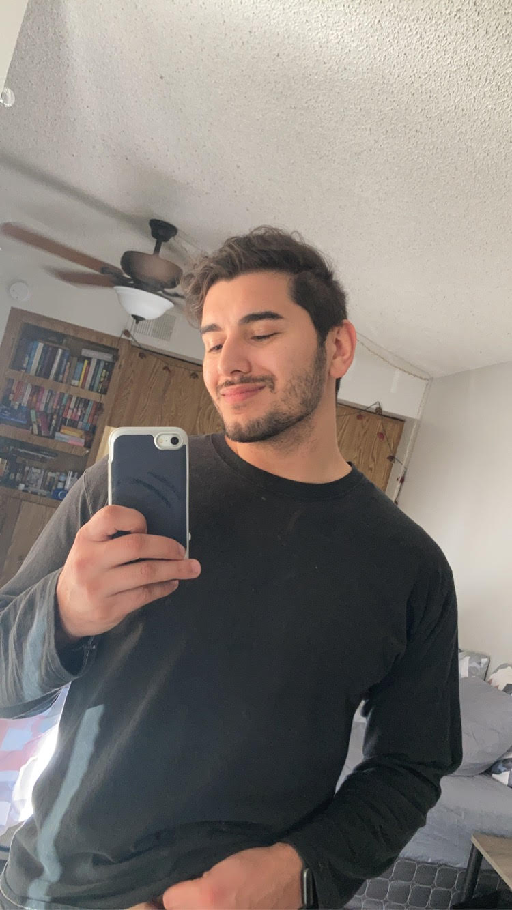

Introduction
Hello, I'm Anthony. I am currently a Software Engineering student attending Thinkful and living in Phoenix, Arizona!
I have a had a growing interest over the past couple of years in learning how sites are made and what makes softwares "tick" if you will, so I've finally made the leap to begin the program and start the journey!
Goals for Program:
- Build the skills necessary to find employment within the field
- Make a career change to be doing what I'm interested in!
- Enjoy the process of learning!
About Me
I'm from Glenville, West Virginia which is a tiny tiny town. Somehow, we had a state college there which is where I graduated from with a Bachelor's in Business Management in 2017. I quickly realized I should have specialized in a more technical field, so I've been researching additional education as well as really paying attention to my interests before making the commitment. I've finally realized that I was constantly watching coding videos and learning how technology actually works which is why I've decided to begin this program now!
I've already gotten an inside look at how well the community works as a team which is really exciting. Starting a new skill is scary enough, so having that support always available has been a sigh of relief. I know I value the help I've received, and once I'm proficient enough, it's a goal of mine to give back as well and be the helping hand when someone is needing it.
Outside of work and school, I'm usually at the dog park or being active outdoors. If this pandemic has taught me anything, it has taught me to be appreciative of the free time and using it on activities that can clear the mind of the day-to-day stressors.